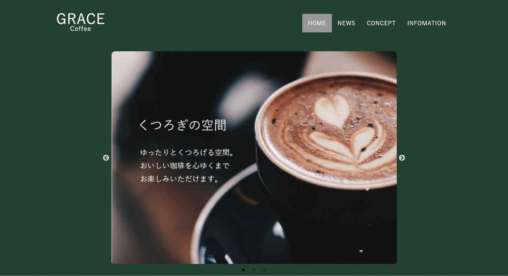
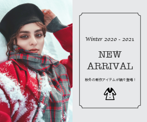

Mariko Honda
Original Works 独自に企画・立案し、デザイン
-

コーヒーショップのWebサイト制作 Webサイト
-

アパレルサイトのバナー制作 Webバナー
About me 自己紹介
Webデザインに興味を持ったきっかけは事務として働く中で資料作成が楽しいかつ褒められたことがあり、それが小さなきっかけでした。 自分が制作したものが成果として残るWebデザインの仕事が自分が目指しているものと合致したためWebデザイナーを目指しています。
view my profile